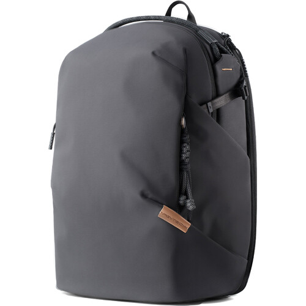

Bags & Carry

PGYTECH
OneGo 22L Backpack
A premium, modular backpack offering rugged protection, weather resistance, and stylish organization for transporting the entire primary kit.

K&F Concept
Alpha Air 25L
A sleek, lightweight camera backpack designed for quick side access and comfortable all-day carry when navigating the city.

K&F Concept
Sling Bag 10L (Camouflage)
A rugged, compact 10L sling bag featuring a stealthy camouflage design. Perfect for light, run-and-gun shooting with quick, cross-body access to essential gear.